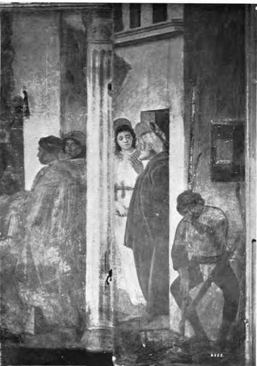

Fresco Painting. Part 4
Description
This section is from the book "Mural Painting", by F. Hamilton Jackson. Also available from Amazon: Mural Painting: -1904.
Fresco Painting. Part 4
The preparation of the cartoon is a matter of great importance, since everything must be settled on it. Cornelius, the great German fresco painter, used to prepare his upon a frame covered with strong cloth upon which paper was glued. A second layer was glued over this when dry, the sheets being scraped a little at the places where they overlapped. The surface was then prepared with size and alum and the drawing made with charcoal. It was fixed by wetting the cloth at the back and steaming the drawing in front, which melted the size a little and thus fixed the charcoal. A tracing was made from this cartoon and either pounced or traced on the wet wall. Latilla says the cartoon should be painted with the same colours as the fresco, and if opaquely it will be better imitated by the assistants. He advises the use of colours ground in water and a medium of yolk of egg. He mentions that white will work pleasantly and in an impasto if mixed with parchment size and a little drying oil and used" with yolk of egg—a form of tempera. He also says: "Beat up a little pale drying oil with the white and yolk of an egg; it makes an excellent medium and the colours do not change when it is used. It will receive high finish and may be employed either opaquely or semi-transparently".
One of the drawbacks to the use of fresco is that the rough surface harbours dirt and is very difficult to clean without damaging the crystallic film. Professor Church gives the following directions for cleaning a dirty and damaged fresco: "Methylated spirits of wine applied freely on tufts of carded cotton removes the tarry and sooty impurities which a previous careful brushing of the painted surface has failed to dislodge. Attempts to clear the clouded portions by means of distilled water are not usually successful. The films which obscure the surface sometimes consist of sulphate of lime, etc. In getting rid of this somewhat opaque film by means of water portions of the pigment are generally removed. When a fresco has been dusted and then cleansed with spirits of wine it should be allowed to dry thoroughly and then treated with the paraffin copal medium, largely diluted with spirits of turpentine or pure toluene. The matt surface is thuB preserved, the obscuring films are rendered trans-parent, and if another cleaning is ever needed the surface may be safely sponged with pure water or weak spirits of wine".
THE DELIVERANCE OF 8. PETER FROM PRISON.
Fresco by Filippino Lippi in the Brancacci Chapel of the Church of the Carmine, Florence.
Signor Forni, in his manual for the picture restorer, gives the following as the result of his experience and of traditional methods of cleaning frescoes: " In case of mould or efflorescence, get the wall as dry as possible, wash it gently with a damp sponge dipped in very dilute ammonia, and leave it for three or four months. If the mould returns do it again. If this does not succeed there is no remedy. If it succeeds, and more complete cleaning is required, use stale bread or skim milk, lupin flower mixed with water, white vinegar, white wine, lime-water, or a weak solution of tartaric acid. Good results may sometimes be obtained by the use of distilled vinegar, sour lemons, and salt water. If the blackening comes from smoke, especially if of an oily nature, pure ammonia is better, or a decoction made from saponaria root; then essence of soap, Greek wine (used by Carlo Maratta in the Vatican), sulphuric acid, but weak, onion, urine, or cooked potatoes, washing the painting with a sponge dipped in distilled water and drying with white cloths, soft and clean. Retouchings may be recognised by being more opaque when looked at against the light, and special care must be taken where they occur—if they begin to move the colour will show on the cotton. Blue was always put over a red fresco preparation " a secco," and so were some of the greens, but yellows, reds, purples, mixed tones, brown, and black are almost always without retouchings. Varnishes are almost impossible to remove satisfactorily".
There are certain drawbacks to the employment of fresco which may be noted here. At a meeting of the Society of Arts on February 12th, 1864, when the subject under discussion was the best method of painting to employ in mural decoration, at which a paper was read by J. B. Atkinson highly extolling fresco, Lord Elcho, who was in the chair, quoting J. R Herbert, K.A., said that if the plasterer on one day put more water into his plaster than he did qn another the colour would come out different though the same colours had been employed. In the fresco of Lear and Cordelia he had cut out the head of Lear six times and that of Cordelia five times, and there was no part of that picture which had not been cut out four times. Mr. Dyce's and Mr. Herbert's plasterers both died mad—in Mr. Herbert's opinion, owing to constant worry. Paillot de Monta-bert cautions the painter in these words: "The artist who is careful of his health will not commence his work until the plaster is quite dry, especially in a closed place or one sheltered from wind.
A dangerous dampness is exhaled from it, and a fetid odour from the lime which affects the chest and the brain. A painter ought also to examine carefully the scaffold made for him. The mason often prefers to risk his life to taking the care required to make the scaffold absolutely firm; the artist ought not to be so rash. • . . For this mode of painting there is no to-morrow in which to reconsider. The day's task has to be done without turning back. The only way of making alterations is to cut the plaster out and start afresh".
As has been said, the practice in Italy at the end of the fifteenth and beginning of the sixteenth centuries was to retouch the fresco when dry with tempera colours and to obtain those brighter colours in this manner which fresco would not give. Pinturricchio, for instance, in the contract for the Piccolomini library at Siena, agreed to paint the heads in fresco and finish them in tempera. Careless cleaning or natural decay has often removed these " ritocchi" or caused them to turn black. Taylor, in his manual for fresco and en-caustic painting, describes a medium which he says is very good for retouching which sounds as if it might be permanent. It is made of "caseum" from fresh cheese. The cheese is to be triturated and worked with warm water till all the soluble part is carried off by the washing. " Use a sieve ot coarse linen cloth, through which it is finally pressed to deprive it completely of the water. The residuum will crumble like stale bread. It may be dried on unsized paper. This material is not soluble in water except by adding quicklime; by triturating this mixture it becomes a very viscous sort of cream, which can be diluted with water—dries quickly and cannot again be dissolved." It may be kept mixed with lime in a stoppered bottle, and when required ground with a muller and warm water.
Continue to: